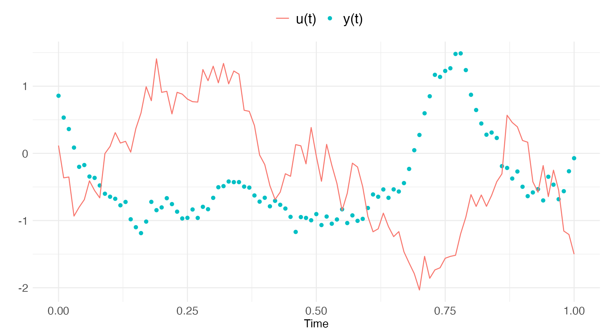
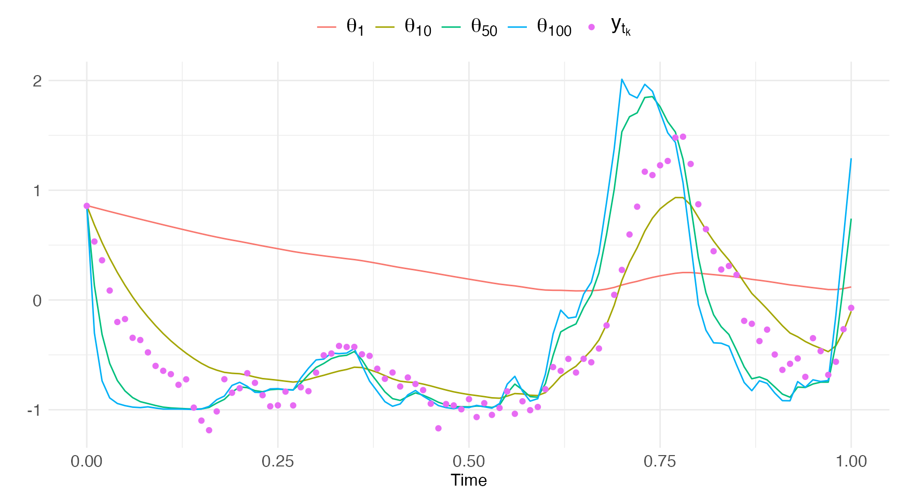
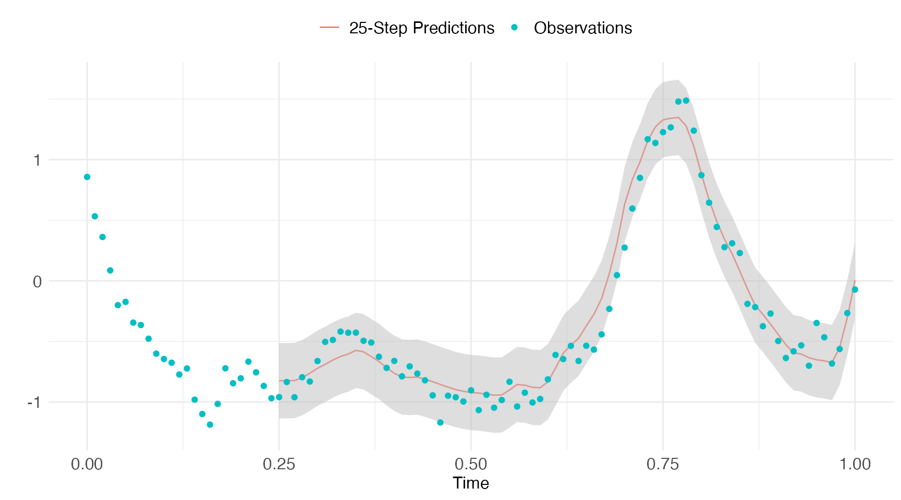
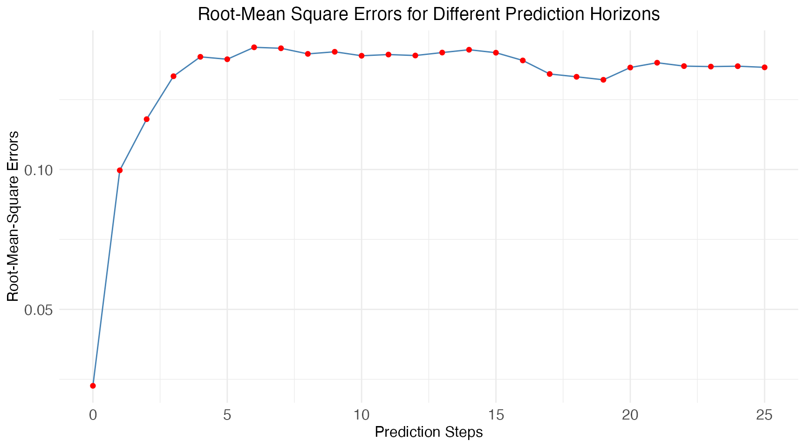

This vignette demonstrates how to use the predict method
for calculating k-step (state and observation) predictions.
Note: These moment predictions assume that the
underlying probability density of the SDE remains approximately
Gaussian. This is generally less accurate the longer the prediction
horizon for non-linear SDEs, in which case stochastic simulations are
more appropriate why the simulate method should be used
instead (see the relevant vignette).
Notation
Let the set of observations from the initial time \(t_0\) until the current time \(t_{i}\) be noted by \[ \mathcal{Y}_{i} = \left\{ y_{i}, y_{i-1},...,y_{1},y_{0}\right\} \] A k-step prediction is a prior estimate of the state mean and covariance k time-steps into the “future” (without updating to any observations along the way) i.e.: \[ \hat{x}_{i+k|i} = \mathrm{E}\left[ x_{t_{i+k}} | y_{t_{i}} \right] \\ \hat{P}_{i+k|i} = \mathrm{V}\left[ x_{t_{i+k}} | y_{t_{i}} \right] \]
We obtain predictions by integrating the moment differential equations (for linear \(f\)) forward in time i.e: \[ \hat{x}_{i+k|i} = \hat{x}_{i|i} + \int_{t_{i}}^{t_{i+k}} f(\hat{x}_{i}(\tau)) \, d\tau \\ \hat{P}_{i+k|i} = \hat{P}_{i|i} + \int_{t_{i}}^{t_{i+k}} A(\hat{x}_{i}(\tau)) \hat{P}_{i}(\tau) + \hat{P}_{i}(\tau) A^{T}(\hat{x}_{i}(\tau)) + G(\hat{x}_{i}(\tau)) G^{T}(\hat{x}_{i}(\tau)) \, d\tau \] where \(\hat{x}_{i}(\tau) = \mathrm{E}\left[ x_{\tau} | y_{t_{i}} \right]\) and \(\hat{P}_{i}(\tau) = \mathrm{V}\left[ x_{\tau} | y_{t_{i}} \right]\), and \(A = \dfrac{df}{dx}\)
Arguments
The predict method accepts the following arguments
model$predict(data,
pars = NULL,
use.cpp = FALSE,
method = "ekf",
ode.solver = "euler",
ode.timestep = diff(data$t),
k.ahead = Inf,
return.k.ahead = NULL,
return.covariance = TRUE,
initial.state = self$getInitialState(),
estimate.initial.state = private$estimate.initial,
silent = FALSE
)Argument: pars
This argument is a vector of parameter values, which are used to
generate the predictions. The default behaviour is to use the parameters
obtained from the latest call to estimate (if any) or
alternative to use the initial guesses defined in
setParameter.
Argument: use.cpp
This argument is a boolean which determines whether a pure
R (use.cpp=FALSE, default) or
C++ (use.cpp=TRUE) implementation is used
to calculate the predictions.
The advantage of the C++ implementation is computational speed but this comes at the cost of 5-10 seconds compilation time (the first time in a session that the C++ implementation is used, subsequent calls are faster). The number of prediction steps to compute is given by
k.ahead * (nrow(data) - k.ahead)which is maximized at k.ahead = nrow(data)/2. The
C++ implementation is therefore typically advantageous
for some (relatively large) range around this maximum, at least when the
data has sufficiently many rows.
Argument: method
See the description in the estimate vignette.
Note: The predict method is currently
only available using the Extended Kalman filter
(method="ekf).
Argument: ode.solver
See the description in the estimate vignette.
Note: When the argument use.cpp=TRUE
then the only solvers available are euler and rk4.
Argument: return.k.ahead
This vector of integers determines which k-step predictions are
returned. The default behaviour is to return all prediction steps (as
determined by k.ahead).
Example
We consider a modified Ornstein Uhlenbeck process:
\[ \mathrm{d}x_{t} = \theta (a_t - x_{t}) \, \mathrm{d}t \, + \sigma_{x} \, \mathrm{d}b_{t} \\ y_{t_{k}} = x_{t_{k}} + \varepsilon_{t_{k}} \] where the mean is some complex time-varying input \(a_t = tu_{t}^{2}-\cos(tu_{t})\), and \(u_{t}\) is a given time-varying input signal.
We create the model and simulate the data as follows:
model = ctsmTMB$new()
model$addSystem(dx ~ theta * (t*u^2-cos(t*u) - x) * dt + sigma_x*dw)
model$addObs(y ~ x)
model$setVariance(y ~ sigma_y^2)
model$addInput(u)
model$setParameter(
theta = c(initial = 2, lower = 0, upper = 100),
sigma_x = c(initial = 0.2, lower = 1e-5, upper = 5),
sigma_y = c(initial = 5e-2)
)
model$setInitialState(list(1, 1e-1*diag(1)))
# Set simulation settings
set.seed(20)
true.pars <- c(theta=20, sigma_x=1, sigma_y=5e-2)
dt.sim <- 1e-3
t.sim <- seq(0, 1, by=dt.sim)
u.sim <- cumsum(rnorm(length(t.sim),sd=0.1))
df.sim <- data.frame(t=t.sim, y=NA, u=u.sim)
# Perform simulation
sim <- model$simulate(data=df.sim,
pars=true.pars,
n.sims=1,
silent=T)
x <- sim$states$x$i0$x1
# Extract observations from simulation and add noise
iobs <- seq(1,length(t.sim), by=10)
t.obs <- t.sim[iobs]
u.obs <- u.sim[iobs]
y = x[iobs] + true.pars["sigma_y"] * rnorm(length(iobs))
# Create data-frame
.data <- data.frame(
t = t.obs,
u = u.obs,
y = y
)with the true parameters \[ \theta = 20 \qquad \sigma_{x} = 1.00 \qquad \sigma_{y}=0.05 \]
The data is plotted below: 
A good starting point for using predictions, is to check for
appropriate parameter values, which may be provided to
setParameter for good initial guesses for the optimization.
Note however that setParameter must be called in order to
predict to be callable (the parameter names of the model
needs to be identified), but the parameter values can be changed when
calling predict. Let’s calculate predictions for a series
of parameter values (changing only theta):
Note: The default behaviour of predict
is to use a “full” prediction horizon e.g. with k.ahead as
big as possible (k.ahead = nrow(.data)-1), and using the
parameters from setParameter in this case
pars=c(2,1,1):
pred = model$predict(.data, k.ahead=nrow(.data)-1, pars=c(1, 1, 0.05))
pred1 = model$predict(.data, k.ahead=nrow(.data)-1, pars=c(10, 1, 0.05))
pred2 = model$predict(.data, k.ahead=nrow(.data)-1, pars=c(50, 1, 0.05))
pred3 = model$predict(.data, k.ahead=nrow(.data)-1, pars=c(100, 1, 0.05))The output of predict is a list of two
data.frames, one for states and one for observations. The
five first columns of the two data.frames are identical -
they contain the columns i and j (indices),
associated time-points t.i and t.j, and
k.ahead. The remaining columns for states are the mean
predictions, and associated covariances.
head(pred$states) ## i. j. t.i t.j k.ahead x var.x
## 1 0 0 0 0.00 0 1.228755 0.002439024
## 2 0 1 0 0.01 1 1.206468 0.012390244
## 3 0 2 0 0.02 2 1.184417 0.022142439
## 4 0 3 0 0.03 3 1.162597 0.031699590
## 5 0 4 0 0.04 4 1.141237 0.041065598
## 6 0 5 0 0.05 5 1.120086 0.050244286The observations data.frame currently only
contain mean estimates, which are obtained by passing the mean state
estimates through the observation function, which is this case is \(y = h(x) = x\). The actual observed data is
also provided with the suffix .data.
head(pred$observations)## i. j. t.i t.j k.ahead y y.data
## 1 0 0 0 0.00 0 1.228755 1.23447430
## 2 0 1 0 0.01 1 1.206468 0.97884420
## 3 0 2 0 0.02 2 1.184417 0.57395038
## 4 0 3 0 0.03 3 1.162597 0.35458516
## 5 0 4 0 0.04 4 1.141237 -0.04251396
## 6 0 5 0 0.05 5 1.120086 -0.18870233When we plot these predictions against data we can perhaps identify that \(\theta \in \left[10,50\right]\) (with \(\theta=20\) being the truth here).

Forecasting Evaluation
We can evaluate the forecast performance of our model by comparing predictions against the observed data. We start by estimating the most likely parameters of the model:
fit = model$estimate(.data)## Checking data...## Constructing objective function and derivative tables...## ...took: 0.083 seconds.## Minimizing the negative log-likelihood...## 0: 920.28471: 2.00000 0.200000
## 1: -32.748040: 2.01465 1.19989
## 2: -49.267078: 6.01432 1.14877
## 3: -75.321450: 22.0129 0.935117
## 4: -77.133918: 17.1351 1.00124
## 5: -77.819764: 18.6698 0.979520
## 6: -77.842339: 18.9070 0.974925
## 7: -77.858520: 18.9749 0.971871
## 8: -77.965268: 19.2199 0.949778
## 9: -78.089423: 19.2483 0.922061
## 10: -78.223819: 18.9467 0.889066
## 11: -78.259319: 18.6421 0.884139
## 12: -78.262250: 18.5681 0.888087
## 13: -78.262281: 18.5649 0.888761
## 14: -78.262281: 18.5649 0.888771## Optimization finished!:
## Elapsed time: 0.003 seconds.
## The objective value is: -7.826228e+01
## The maximum gradient component is: 2.1e-06
## The convergence message is: relative convergence (4)
## Iterations: 14
## Evaluations: Fun: 16 Grad: 15
## See stats::nlminb for available tolerance/control arguments.## Returning results...## Finished!
print(fit)## Coefficent Matrix
## Estimate Std. Error t value Pr(>|t|)
## theta 18.564856 1.376804 13.4840 < 2.2e-16 ***
## sigma_x 0.888771 0.091936 9.6673 4.855e-16 ***
## ---
## Signif. codes: 0 '***' 0.001 '**' 0.01 '*' 0.05 '.' 0.1 ' ' 1and then predict over an appropriate forecast horizon. In this example we let that horizon be 25-steps:
pred.horizon <- 25
pred = model$predict(.data, k.ahead=pred.horizon)## Checking data...## Predicting with R...## Returning results...## Finished!Let’s plot the 10-step predictions against the observations.
pred.H = pred$states[pred$states$k.ahead==pred.horizon,]
Lastly lets calculate the mean prediction accuracy using an RMSE-score:
rmse = c()
k.ahead = 1:pred.horizon
for(i in k.ahead){
xy = data.frame(
x = pred$states[pred$states$k.ahead==i,"x"],
y = pred$observations[pred$observations$k.ahead==i,"y.data"]
)
rmse[i] = sqrt(mean((xy[["x"]] - xy[["y"]])^2))
}